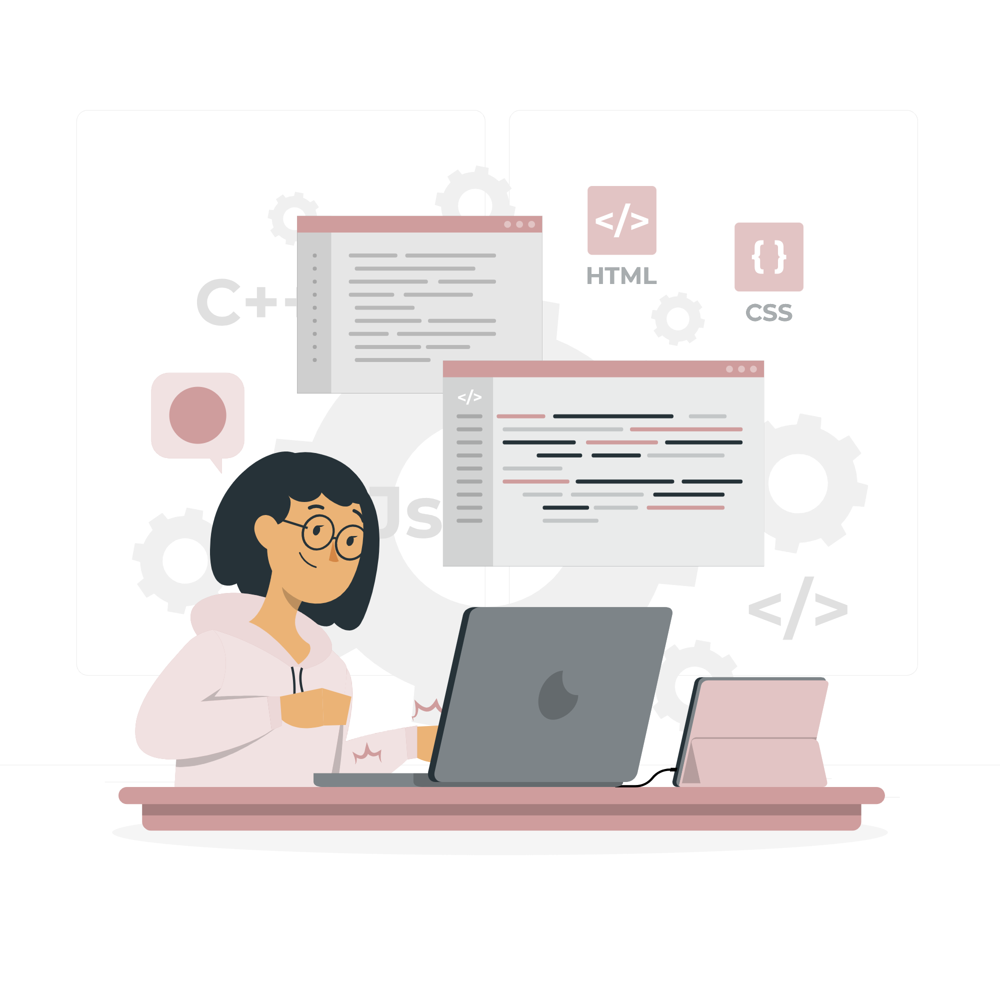

My UX Skills

User Research
I begin by defining the problem from multiple perspectives and empathizing to understand user needs. By conducting interviews and usability studies I am able to adapt design solutions to fit user insights.

User Interface Design
Adaptive, innovatice, accessible designing in Figma, Adobe XD, InVision, and Miro.

Web Development
Proficient coding in HTML, CSS, and Javascript.